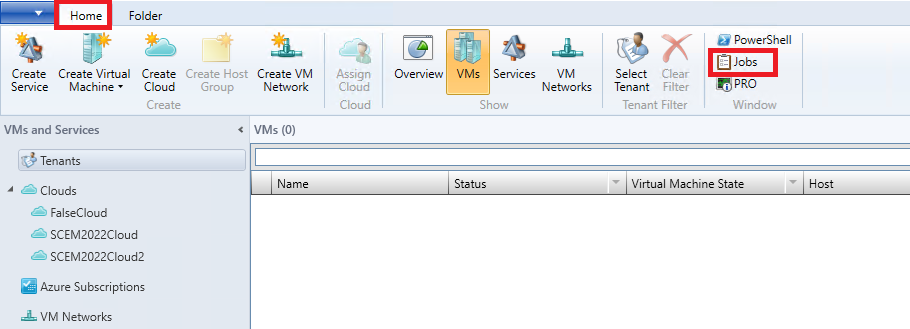
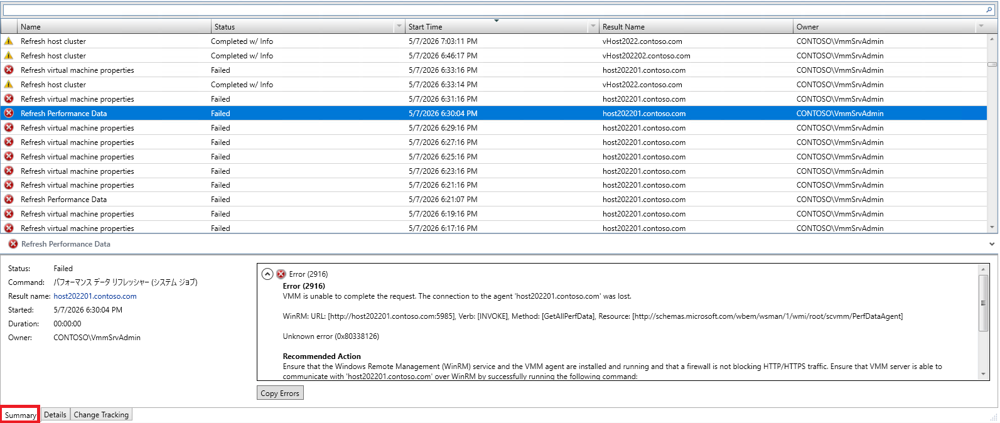
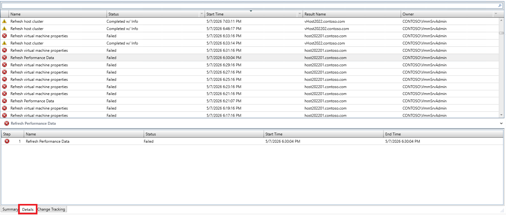
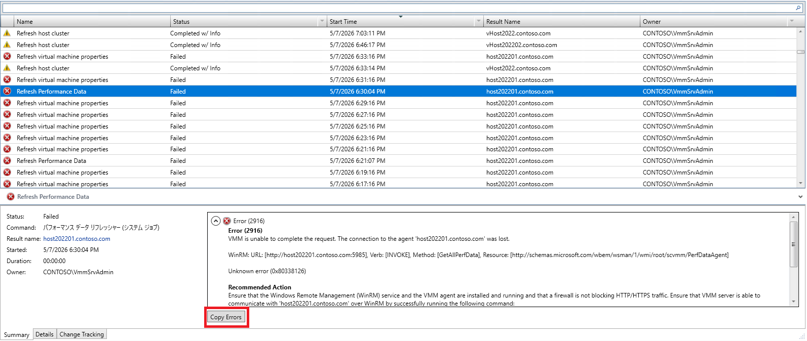
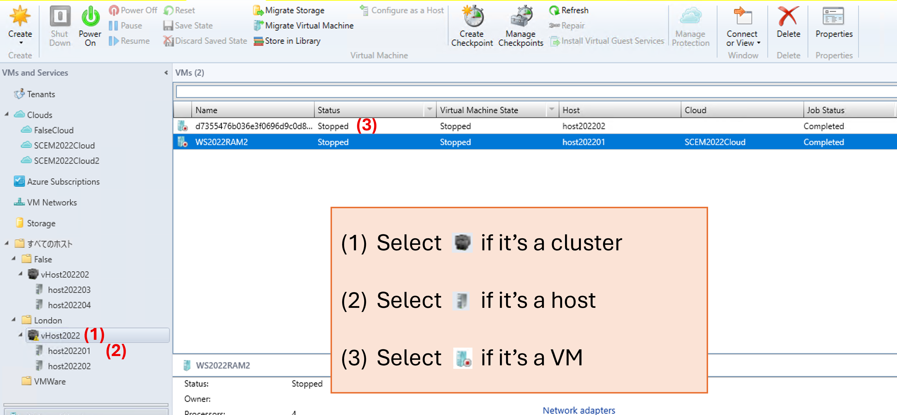
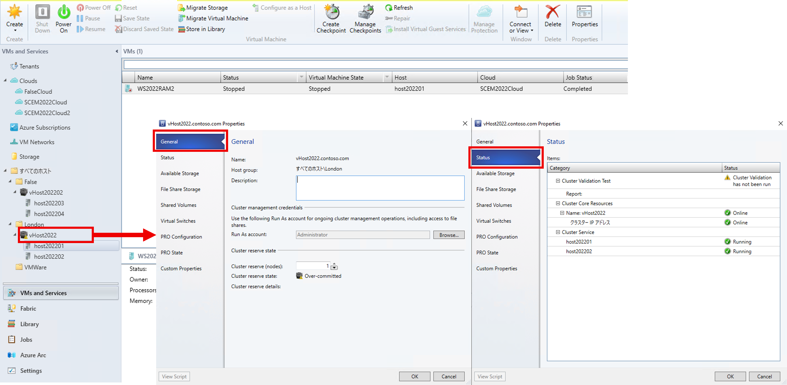
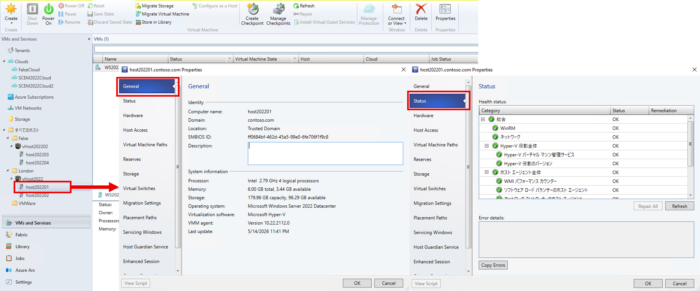
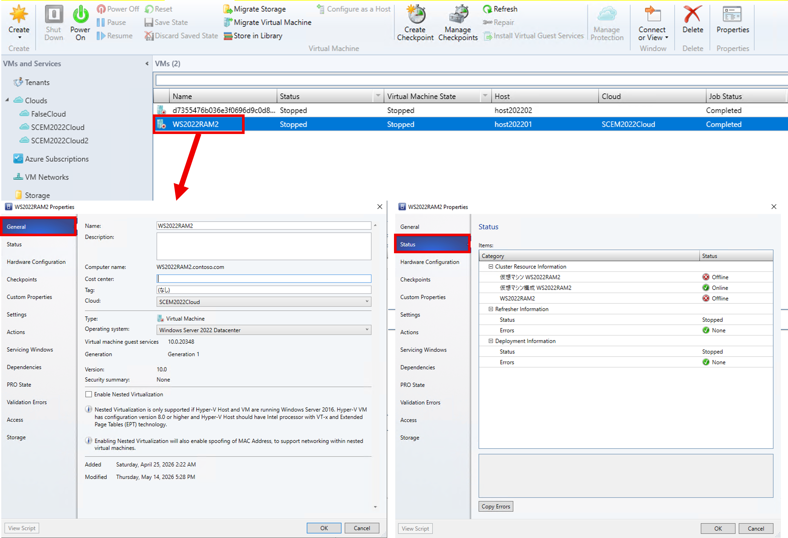

Hello everyone,
This article explains the methods for acquiring logs and other information that are frequently collected when investigating troubles that occur in System Center Virtual Machine Manager (hereinafter, SCVMM).
This page is based on the below blog entry.
SCVMM で使用する一般的なログ収集方法
Information Required for Troubleshooting
When troubleshooting SCVMM, we request the following information from customers to understand their environment and SCVMM operations.
This article explains the purpose of each collection and the procedures for collection.
| No. | Item | Collection Purpose |
|---|---|---|
| 1 | Trace Logs and Error Information | When reproducible malfunction behavior occurs, we collect trace logs during issue reproduction to trace the flow of processing and investigate the cause. |
| 2 | Job List | When a SCVMM job does not terminate normally, we confirm the name, execution time, errors that occurred, and other details of running jobs in the job list. |
| 3 | SCVMM Environment Information | This is information to understand the customer environment. Collection targets are three types: SCVMM server information, host information, and virtual machine information. |
| 4 | Cluster/Host/Virtual Machine Property Screens | This is information to understand the customer environment. Collection targets are the property screens of [Cluster/Host/Virtual Machine] where the issue occurred. |
| 5 | SCVMM Error Log | Used for investigation when errors occur in SCVMM or when the SCVMM console abnormally terminates due to an error. |
| 6 | Event Log | Confirm the event log during the time when the malfunction behavior occurred to verify the status of the OS and SCVMM at that time. |
No.1 Trace Logs and Error Information
Trace logs, which record operations during an issue reproduction when unexpected events occur, are the most valuable information for root cause investigation.
In trace log investigation, identifying the date/time when the error occurred and the exact error message is also important.
Below, we introduce methods for acquiring trace log and error message information.
■ Trace Log Collection Procedure
On the SCVMM server and the virtualization host server (Hyper-V server) where the problem occurred, collect information in parallel following the steps below.
- Run Command Prompt as administrator.
- Create a VMM folder (C:\VMMlogs).
- Execute the following commands in order to start VMM trace collection:
- Preparation (1)
[Target for Execution] SCVMM Server:
1 | logman delete VMM |
[Target for Execution] SCVMM Server and virtualization host server where the problem occurred:
1
2logman delete WinRM
logman delete WMI
(*) When executing the above commands, you may see a message “Data Collector Set was not found.” This is not a problem and you may just ignore it.
- Preparation (2)
[Target for Execution] SCVMM Server:
1 | logman create trace VMM -v mmddhhmm -ow -o C:\VMMlogs\%computername%_VMMLog.ETL -p Microsoft-VirtualMachineManager-Debug -nb 16 16 -bs 1024 -mode Circular -f bincirc -max 2048 |
[Target for Execution] SCVMM Server and virtualization host server where the problem occurred:
1
2logman create trace WinRM -v mmddhhmm -ow -o C:\VMMlogs\%computername%_WinRM.ETL -p Microsoft-Windows-WinRM 0xffff 0x5 -nb 16 16 -bs 1024 -mode Circular -f bincirc -max 2048
logman create trace WMI -v mmddhhmm -ow -o C:\VMMlogs\%computername%_WMI.ETL -p WMI_Tracing 0xffff 0x5 -nb 16 16 -bs 1024 -mode Circular -f bincirc -max 2048
(*) Trace files up to a maximum of 2GB each will be collected under “C:\VMMlogs” using the -max option. Before executing, please confirm the free space on the C drive in advance, or specify a drive with larger capacity.
- Start Collection (ETL files will be created under the C:\VMMlogs folder)
[Target for Execution] SCVMM Server:
1 | logman start VMM |
[Target for Execution] SCVMM Server and virtualization host server where the problem occurred:
1
2logman start WinRM
logman start WMI
Execute the issue reproduction steps. * The trace logs during this process will be used for analysis.
Execute the following commands in order to stop trace collection:
[Target for Execution] SCVMM Server:
1 | logman stop VMM |
[Target for Execution] SCVMM Server and virtualization host server where the problem occurred:
1
2
3
4logman stop WinRM
logman stop WMI
logman delete WinRM
logman delete WMI
6. Execute the following command on each etl file to convert the trace file (a .txt file will be generated):
1
netsh trace convert C:\VMMlogs\<Computer Name>_<Each ETL File>.etl
(*)
7. Compress the C:\VMMlogs folder and send it to us.
■ Error Information Collection Procedure
Depending on the error occurrence situation, collect one of the following pieces of information:
(1) When errors occur in job results
A typical error occurrence situation in SCVMM is when operations or configuration changes are made and errors occur in jobs during execution.
In this case, collect information following these steps:
- Log in to the SCVMM server with administrator privileges and open the SCVMM console.
- Select the [Home] tab at the top of the console and click [Jobs] within the tab.

- From the displayed job list, capture a screenshot showing the execution result of the job you performed.
Capture screenshots of both the [Overview] tab and the [Details] tab.
Capture screens that show the following as an example:


- For the job where you captured the screenshot in step 3, click [Copy Error] displayed below the error content, paste the copied error content into a text editor, and save it as a .txt file.

- Collect the files from steps 3 and 4 into one folder, compress them, and send them to us.
(2) When errors are displayed in pop-ups before job execution and the job is not recorded
There are cases where errors occur before job execution, such as when pop-ups appear during configuration saving and prevent the configuration from being saved.
In this case, since the job has not been executed, it is not possible to identify error content and execution time from the job for trace investigation.
In this situation, capture a screenshot showing the error content displayed in pop-ups and the OS date/time when the error occurred, and send it to us.
No.2 Job List
When a job executed in SCVMM does not terminate normally, you can confirm the job executed, errors that occurred, and error messages by checking the job list.
The method for obtaining the job list is as follows:
■ Collection Procedure
- Log in to the SCVMM management server with administrator privileges.
- Create a folder named “temp” directly under the C drive in advance.
- From the Start menu, execute [Virtual Machine Manager Command Shell].
- Execute the following command:
1 | Get-SCJOB -All -Full | export-csv -path "C:\temp\scjob.csv" -encoding UTF8 |
- Send the “scjob.csv” file output to the “temp” folder to us.
No.3 SCVMM Environment Information (SCVMM Server Information, Host Information, Virtual Machine Information)
When we need to understand the environment where the problem occurred and usage status, we request SCVMM version information, information on hosts managed by SCVMM, and virtual machine information.
The methods for acquiring each piece of information are as follows:
■ Collection Procedure
- Log in to the SCVMM management server with administrator privileges.
- Create a folder named “temp” directly under the C drive in advance.
- From the Start menu, execute [Virtual Machine Manager Command Shell].
- Execute the following command to obtain SCVMM server information:
1 | Get-SCVMMServer -ComputerName "*** FQDN of VMM Server ***" | export-csv -path C:\temp\VMMinfo.csv -encoding UTF8 |
Example) Get-SCVMMServer -ComputerName “VMMServer01.Contoso.com” | export-csv -path C:\temp\VMMinfo.csv -encoding UTF8
5. Execute the following commands to obtain information on hosts managed by SCVMM:
1
2
3Get-SCVMHost | export-csv -path C:\temp\Hostlist.csv -encoding UTF8
Get-SCVMHostCluster | export-csv -path C:\temp\Clusterlist.csv -encoding UTF8
Get-SCVMMManagedComputer | export-csv -path C:\temp\ManagedComputer.csv -encoding UTF8
6. Execute the following command to obtain information on virtual machines managed by SCVMM:
1
Get-SCVirtualMachine | export-csv -path C:\temp\VirtualMachine.csv -encoding UTF8
7. Send the “VMMinfo.csv”, “Hostlist.csv”, “Clusterlist.csv”, “ManagedComputer.csv”, and “VirtualMachine.csv” files output to the “temp” folder to us.
No.4 Cluster/Host/Virtual Machine Property Screens
When warnings such as status abnormalities occur on clusters, hosts, or virtual machines managed by SCVMM, we request screenshots of the corresponding property screens to confirm the occurring warnings and configuration details.
The methods for acquiring each piece of information are as follows.
■ Collection Procedure
- Log in to the SCVMM console.
- Open the [VMs and Services] screen.
- Select the target where the warning occurred and click Properties from the right-click menu.

- On the Properties screen, open the [General] screen and [Status] screen, and capture screenshots.
(1) Cluster [General] screen and [Status] screen

(2) Host [General] screen and [Status] screen
When warnings are displayed on the Status screen, capture screenshots in a way that identifies the target.
Also, copy the error message by clicking the [Copy Error] button and save it as error.txt.

(3) Virtual Machine [General] screen and [Status] screen
When warnings are displayed on the Status screen, capture screenshots in a way that identifies the target.
Also, copy the error message by clicking the [Copy Error] button and save it as error.txt.

- Send the captured screenshots and error.txt to us.
No.5 SCVMM Error Log
When errors occur in SCVMM or the SCVMM console abnormally terminates due to errors, information about the cause may be recorded in the error log.
The method for obtaining the error log is as follows:
■ Collection Procedure
Perform this procedure on the following servers:
- SCVMM Server
- Server where SCVMM console abnormally terminated
- If the SCVMM console was open on the SCVMM server, collect this log only from the SCVMM server.
- Log in to the target server with administrator privileges.
- Open Explorer and access the following folder:
C:\ProgramData
By default, the “ProgramData” folder is set as a hidden folder.
To access this folder, enable the setting to display hidden folders in Explorer. - Compress the “VMMLogs” folder existing in the folder accessed in step 2, and send it to us.
If there are multiple collection targets, rename the compressed file of “VMMLogs” so that the collection target can be identified.
For example, if collected from the management server, rename it to “MS_VMMLogs”, or if collected from a virtualization host, rename it to “Host_VMMLogs”.
No.6 Event Log
Part of SCVMM processing is recorded in the event log, so we request the event log to be sent for problem analysis.
The method for obtaining the event log is as follows:
■ Collection Procedure
Perform this procedure on the following computers:
・SCVMM Server
・Virtualization host server (Hyper-V server) where the problem occurred
Open Event Viewer on the target computer.
A reliable way to open it is to press [win] + [R], directly specify “eventvwr.msc”, and run it.In the console tree on the left, click the event log to save.
From an SCVMM perspective, collect the following three event logs.- Application
- System
- Security
- WinRM-Operational (SCVMM server only) (*1)
- WMIActivity-Operational (*1)
- Admin (*2)
- Operational (*2)
The logs marked with (*1) are displayed when expanding [Applications and Services Logs] -> [Microsoft] -> [Windows].
If the event logs marked with (*1) are not displayed, collection of (*1) event logs from that server is not necessary.
The logs marked with (*2) are displayed when expanding [Applications and Services Logs] -> [Microsoft] -> [VirtualMachineManager] -> [Server].
If the event logs marked with (*2) are not displayed, collection of (*2) event logs from that server is not necessary.In the right pane, click [Save All Events As…].
Specify any name for the event log to save.
For file types, collect both “Event Files (.evtx)” and “CSV (Comma Separated) (.csv)”.
※本情報の内容（添付文書、リンク先などを含む）は、作成日時点でのものであり、予告なく変更される場合があります。